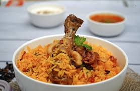

Ingredienti
- 300g di riso basmati
- 250g di carne di manzo
- 1 cipolla
- 1 pomodoro
- 2 cucchiai di yogurt
- 1 cucchiaio di spezie biryani
- Zafferano e acqua di rose (facoltativi)
- Olio, sale, pepe
Preparazione
- Lava e cuoci il riso a metà cottura.
- Rosola la cipolla, aggiungi la carne e le spezie.
- Aggiungi pomodoro e yogurt, cuoci 15-20 min.
- In una teglia, alterna strati di riso e carne.
- Copri e cuoci a fuoco basso per 15 min.
- Servi con coriandolo fresco e raita.
Tempo di preparazione: 20-30 minuti
Difficoltà: Media